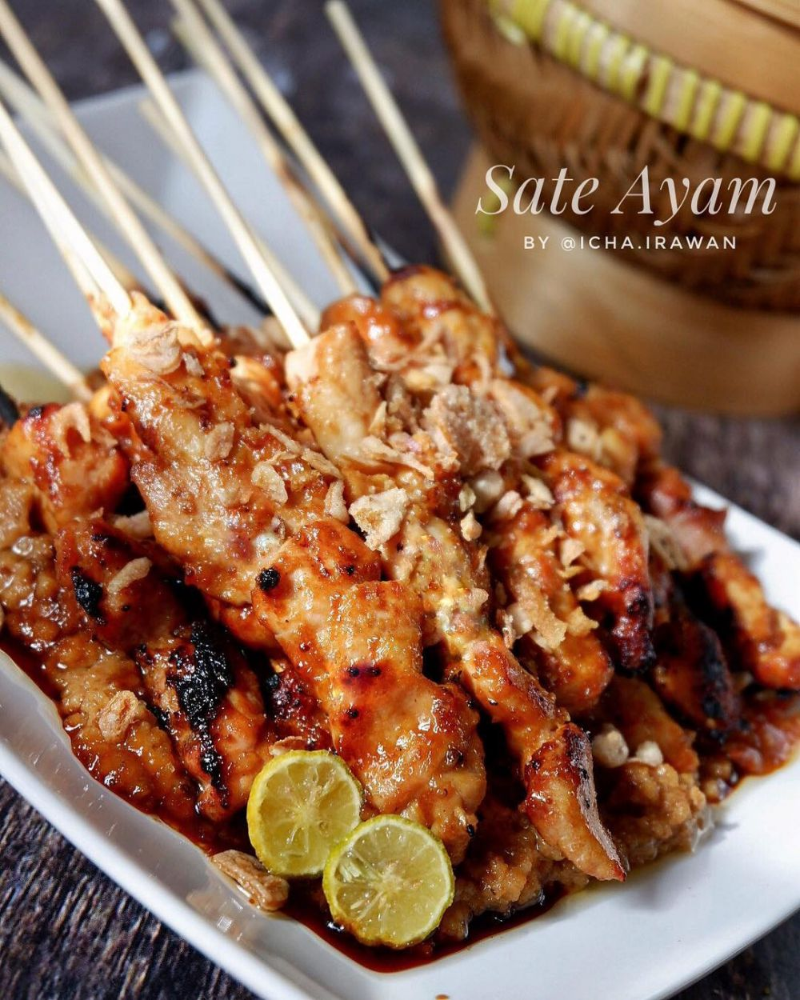

Sate Ayam Madura
Bahan
- 1 Kg daging ayam fillet
- 1 Sdt garam
- 2 Sdm kecap manis
- Perasan air lemon/jeruk limau
- tusuk sate
Bahan Bumbu Kacang
- Kacang tanah 300 gram yang telah digoreng/sangrai
- Bawang putih 6 siung
- Bawang merah 8 siung
- Cabai merah 4 buah
- Air 500 ml
- Daun jeruk 3 lembar
- Garam gula secukupnya
- Kecap manis 100 ml
Bahan Pelengkap
- Lontong atau ketupat
- Kecap manis
- Bawang goreng
- Jeruk limau
- Sambal
Cara Membuat
- Potong daging ayam bentuk dadu, beri garam dan perasan jeruk lemon dan kecap manis, simpan dikulkas minimal 1 jam.
- Lalu tusuk-tusuk dengan tusuk sate dan lakukan hingga habis, sisihkan.
- Haluskan semua bahan bumbu kacang, kecuali kecap, daun jeruk.
- Lalu masukkan kecap, air, daun jeruk dan masak dengan api kecil hingga air surut dan mengeluarkan minyak. Koreksi rasa.
- Siapkan bakaran/ panggangan. Lumuri sate ayam dengan bumbu kacang dan sedikit kecap manis.
- Bakar sate hingga matang sambil dibolak-balik.
- Sajikan sate ayam dengan bumbu kacang, jeruk limau, kecap manis dan lontong dan pelengkap lainnya.